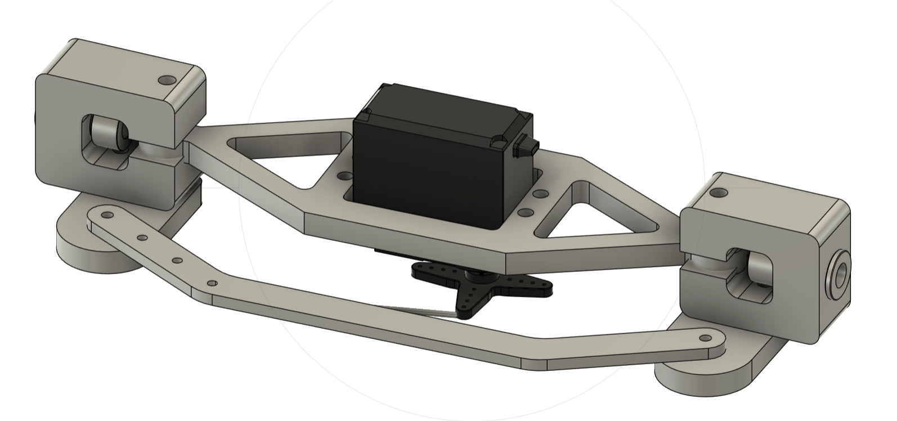
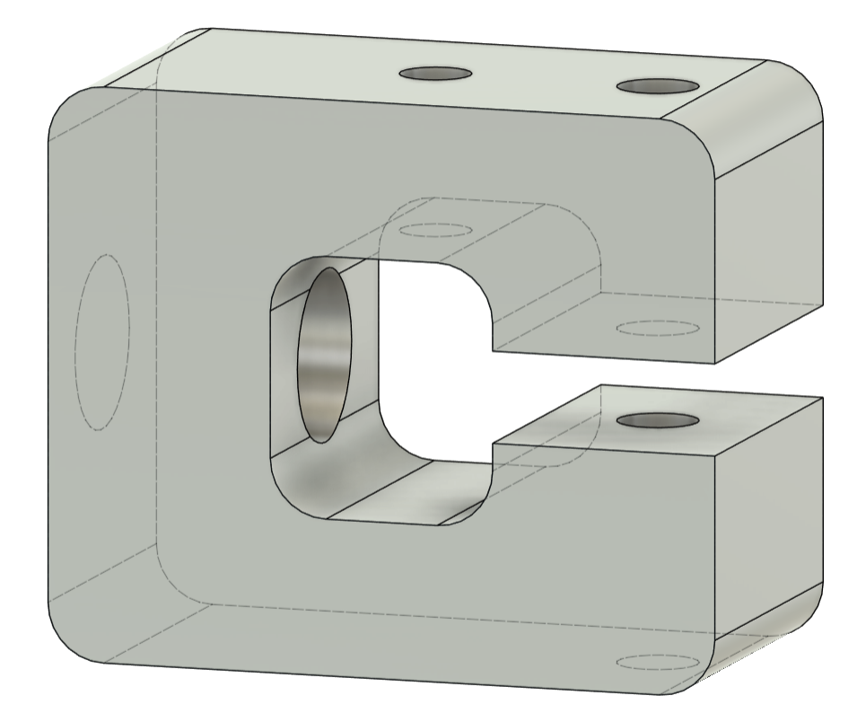
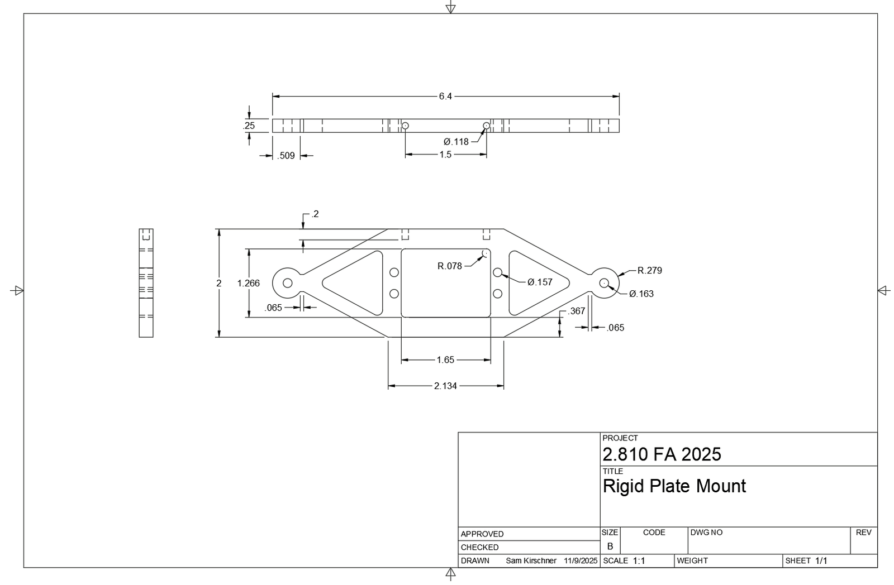
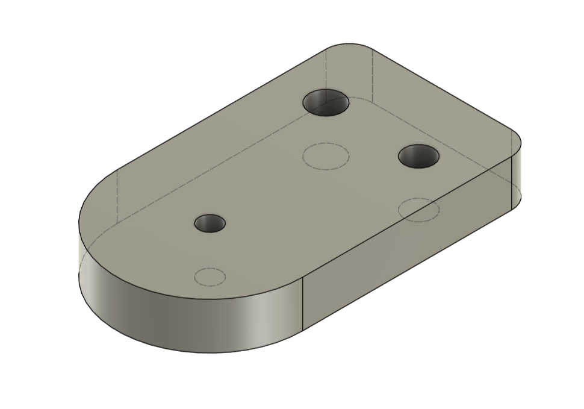
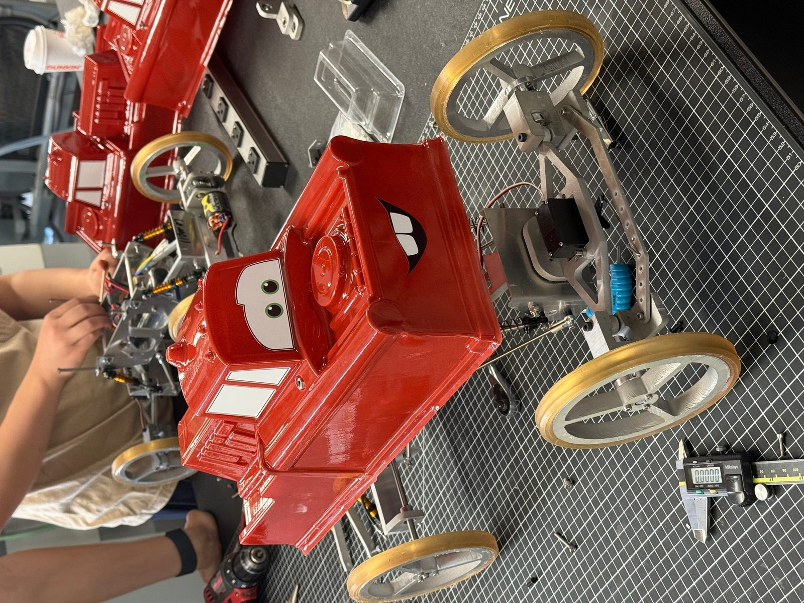
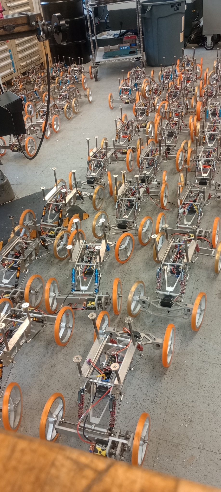

A working prototype and a manufacturable product are different objects. For MIT's 2.810, our team re-engineered an RC car's steering system to be built repeatably from aluminum — collapsing 3D geometries into waterjet-cut 2D profiles and spending tolerance only where the mechanism demands it.

The inherited steering design worked, but it was a manufacturing liability: it leaned on expensive components, 3D-printed or complex-machined geometries, and unreliable press fits and adhesives. The assignment was to take it from "prints on a desktop" to "produces consistently in a shop."
Across the eight unique components — plate mount, rigid linkage, C-joint, steer bars, bushings, shaft collars, wire, and servo — we applied a consistent manufacturing philosophy:
Each part got an explicit operation sequence. The rigid plate mount: waterjet the profile and holes, drill the top holes to tolerance, face the back edge on the mill, then drill and thread it. The C-joint is the showcase part — waterjet profile, face front/back, drill-and-ream the bushing bore, face interior surfaces, press-fit and ream the bushing to final ID — sequenced so that each datum is established before the features that depend on it. The Ackermann steering geometry (R = √((r+W)² + B²), r = B/tan θ) set the functional dimensions the process plan had to hit.





The exercise is the discipline at the heart of mechanical engineering practice: respecting that every feature on a drawing is a real operation with real cost, and that good design moves cost off the part by choosing processes — waterjet, mill, drill-and-tap, bend — deliberately. It pairs directly with the precision metrology and tolerance-analysis side of my toolkit.